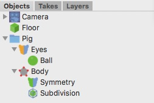

HDRI Rendering
This tutorial focuses on rendering a photo realistic scene. To do so, we use a technique called Image Based Lighting, or IBL. When you render a scene with IBL, the scene won't be light by normal light sources such as a point light, but rather by a special background texture. These High Dynamic Range Images store light levels beyond what a normal texture map can, and so are suitable for simulating realistic environments, such as a very bright sun shining in the sky. These textures end with ".hdr". Normal textures like .jpg don't work because they don't contain the proper lighting information.
| 1. Load in the scene We'll first load in an existing scene because we're only going to concentrate on rendering in this tutorial. Our sample scene is this piggy bank on a wooden plinth. If we render the scene, we get a neat pink pig as expected, but he doesn't look too realistic just yet. |

|
| 2. Adding the HDRI Light Now we add the HDRI light to our scene. This can be done by using the menu command "Objects -> Scene -> HDRI light" or using the toolbar. The HDRI light already has a default HDRI texture loaded (Oldtown.hdr). We can keep that but you can also load another HDR image into the HDRI light source if you want. The other properties can stay unchanged for the time being. If you render the scene now, the .hdr texture appears in the background of our scene and the objects are nicely lit. |
|
| 3. Improving the rendering with radiosity To improve the lighting of the scene we can use radiosity (also called indirect illumination). To turn radiosity on click on the render preferences icon in the toolbar (the cheetah head). The properties of the cheetah renderer should show up now. Scroll down to the Radiosity settings and turn on the Radiosity check box. For the other properties please use the values as shown on the screenshot on the left. If you now press the render button you will get your first radiosity rendering. As you can see the pig will be illuminated very softly by this HDRI texture. Thanks to the indirect illumination the scene gets even illuminated under the pig. |
|
| 4. Adding reflections In our last step we set the reflection intensity of the pink material to 0.1. After another rendering we see these nice bright reflections from our HDRI texture which gives HDRI renderings their very realistic appearance. |
|
|
Now it is your turn! Play around with the various properties to get a better understanding of how they work. For example, you could increase the power property of the HDRI tag to make the scene brighter, or just try different HDRI textures. You can also add some classical light sources to illuminate dark areas. |
|